取り出したデータは、そのまま見るだけじゃもったいない。
数えて・合計して・グループにまとめて・並べ替える——データを"料理"する方法を学びます🍓
RDBMS には、データベースの中のデータを 集計したり操作したりする ための 関数というしくみが用意されています。関数にデータや条件を渡すと、何らかの処理をして結果を返してくれます。
その中でも、テーブルにあるカラムの 合計値や平均値 など、たくさんの数値から 1つの結果 を返す関数を 集計関数といいます。
この章で使う集計関数は5つ。どれもすべての RDBMS で使えます。
集計関数を使う SQL文の基本の形は、関数名のあとに引数を（）で囲むだけ。とてもシンプルです。
SELECT 関数名(引数) FROM テーブル名;
COUNT関数ですべてのレコード数（＝データの件数）を数えるときは、引数に 「*（アスタリスク）」 を指定します。
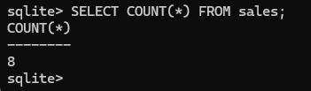
sales テーブルのレコード数（件数）が求められたSELECT句で関数を使うと、見出しには 「関数名と引数」 がそのまま表示されます。ASキーワードを使うと、見出しに好きな別名を付けられます。
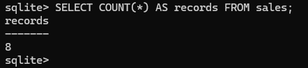
records という分かりやすい名前に変わったCOUNT関数の引数には、* のかわりに カラム名 を指定することもできます。その場合、値が NULL値 ではないレコードだけが数える対象になります。
NULL値とは、セルにデータが入っていない（空っぽの）ことを表す特別な値のことです。
数を数えられたら、次は 合計・平均・最小・最大。使い方は COUNT とまったく同じで、引数に対象のカラム名を入れるだけです。
SUM関数で、price カラムの値をすべて合計します。
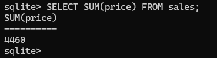
360＋500＋400＋600＋800＋600＋400＋800 ＝ 4460 の計算が行われたAVGは Average（＝平均値）の略。1日あたりの平均売上などを調べるのに便利です。
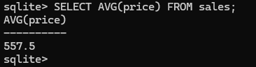
4460 ÷ 8 ＝ 557.5。季節や天気で売上がどう変わるかを調べるのに使えますMIN（Minimum＝最小）と MAX（Maximum＝最大）。関数も 「,（カンマ）」で区切れば同時に使えます。
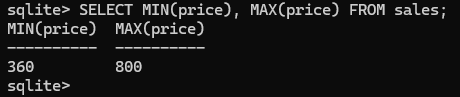
price の一番安い値と一番高い値が同時に求められた数値だけでなく、文字列で表した日付にも MIN・MAX が使えます。
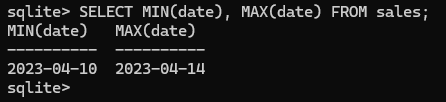
2023-04-10 のように書き方が統一されていないと、正しい結果が得られないから注意してね。ここまでは「テーブル全体」を集計してきました。でも本当に知りたいのは 「お客さんごと」「商品ごと」の集計のはず。そこで登場するのが GROUP BY句（＝グループ分けする）です。
SELECT カラム名, 関数(引数) FROM テーブル名 GROUP BY カラム名;
GROUP BY は集計関数と組み合わせて使います。テーブル名のあとに GROUP BY でまとめたいカラムを指定すると、そのカラムの値ごとにグループを作り、グループごとに集計してくれます。
customer の値ごとにグループを作り、グループごとに COUNT。お客さんごとの来店回数が分かる。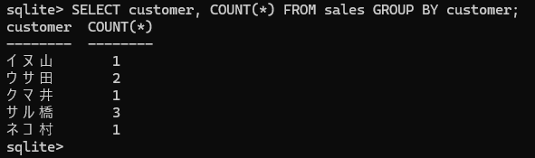
試しにルールを破って、GROUP BY と SELECT で ちがうカラム を指定するとどうなるでしょうか。
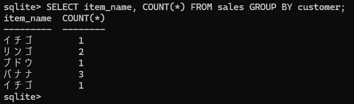
customer でまとめているのに item_name を取り出したので、正しい結果にならないSELECT customer …GROUP BY customerSELECT item_name …GROUP BY customeritem_name（商品）でグループを作り、グループごとに price を合計します。
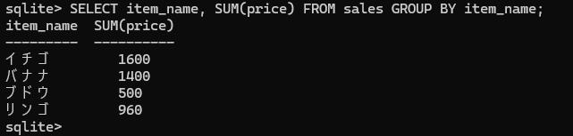
date（日付）でグループを作り、1日の平均売上額を求めます。
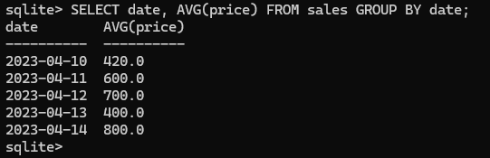
GROUP_CONCAT関数には、指定したカラムの値を 結合する働きがあります。結合とは、複数の値をつなげて1つの値にすることです。
使い方は COUNT や SUM と同じで、引数に 結合したいカラム名 を入れます。
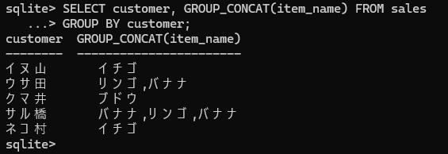
同じ商品を何度も買っていると、値が重複して表示されます。DISTINCTキーワードを付けると、重複を取り除いた 結果が得られます。
GROUP_CONCAT(DISTINCT カラム名)
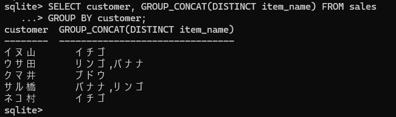
グループ化して集計した結果に対して 条件をつけたい ときは HAVING句を使います。「レコードが2件以上のお客さんだけ」といった絞り込みができます。
SELECT カラム名, 集計関数 FROM テーブル名
GROUP BY カラム名 HAVING 条件式;
次の SQL文では、customer でグループ化したうえで、レコードが2件以上あるグループだけを取り出しています。
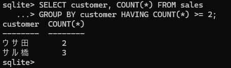
= 2 の実行結果">🔑 WHERE句と HAVING句の違い
どちらもレコードを絞り込む条件ですが、効くタイミングがちがいます。WHERE句は グループ化する前のデータに、HAVING句は グループ化したあとのデータに条件をつけます。
句には実行される順番があります。SQL文は書いた順番どおりに実行されるとは限りません。
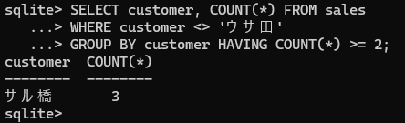
'ウサ田' と HAVING を組み合わせた実行結果">ORDER BY句を使うと、取り出したデータを 指定したカラムの値で並べ替えられます。ORDER はここでは「順番」という意味で使われています。
SELECT * FROM テーブル名 ORDER BY 並べ替え基準のカラム名;
次の SQL文は price カラムを基準にしているので、代金が安い順に並んで出力されます。
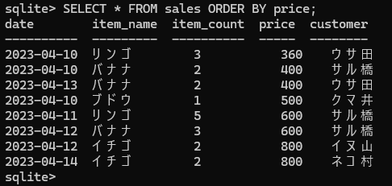
並べ替え基準のカラム名のあとに DESCキーワードを付けると、大きい方から小さい方へ並べ替えられます。
SELECT * FROM テーブル名 ORDER BY カラム名 DESC;
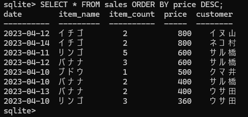
小さい方から大きい方へ。DESC を書かないと自動的にこちらになります。
大きい方から小さい方へ。並べ替え基準のカラム名のあとに DESC を書きます。
ORDER BY price; は ORDER BY price ASC; と同じ意味です（ASC は省略されているだけ）。
まず item_count だけで並べ替えると、個数が同じ「3」でも price は 360／600 と、きれいには並びません。
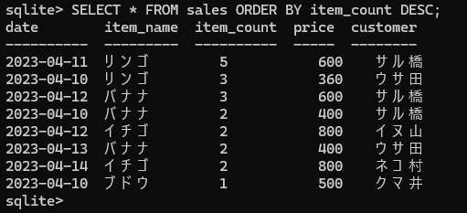
item_count は降順だが、同じ値の中では price がバラバラそこで並べ替え基準を 「,（カンマ）」で複数つなげます。1つめが同じ値のときは、2つめの基準でさらに並べ替わります。
SELECT * FROM テーブル名
ORDER BY カラム名1 DESC, カラム名2 DESC;
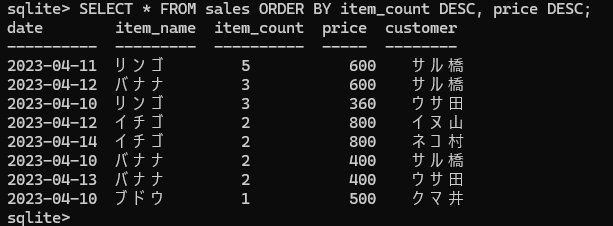
item_count が同じ値でも、さらに price でキレイに並んだいよいよ総まとめ。これまでの句を組み合わせて、複雑な SELECT文を作ります。ポイントは 句が実行される順番です。
SELECT が先頭でも、実行は5番目。だから ORDER BY は SELECT のあとに動きます。条件で絞り込んだデータを並べ替えます。WHERE の条件式のあとに ORDER BY を書きます。
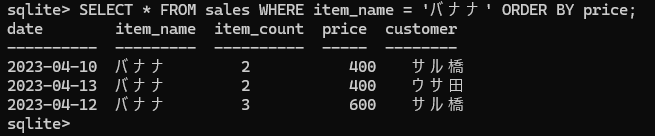
グループ化して集計した数値でも並べ替えられます。ORDER BY に SELECT と同じ集計関数を指定します。
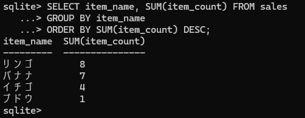
WHERE・GROUP BY・HAVING・ORDER BY をすべて組み合わせた、この章の集大成です。
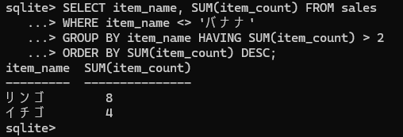
WHERE句はグループ化する 前 に実行されるため、集計関数（SUM など）は使えません。試すとエラーになります。
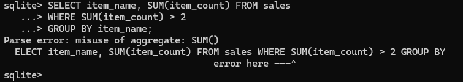
Parse error（SQL文の解析に失敗）。misuse of aggregate: SUM() ＝「SUM() の誤った使い方」という意味絞り込みたい条件が集計関数なら、WHERE ではなく HAVING を使いましょう。
おつかれさまでした🎉 第3章では、取り出したデータを「加工」する方法をたくさん学びました。大事な言葉を並べておきます。